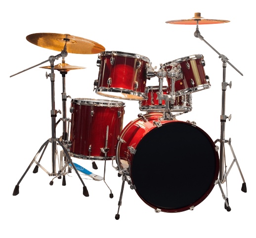
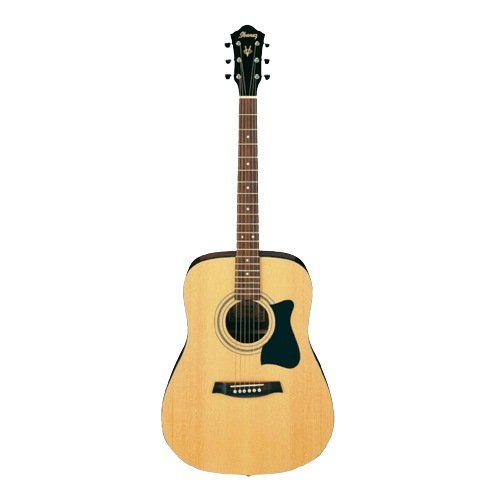

O Vitrolla foi desenvolvido por um grupo de estudantes do IFNMG Campus Salinas, com o intuito de divulgar professores de música locais, para auxiliar aqueles que desejam começar na área da música e está a procura do melhor instrutor. Contamos também com uma página de divulgação de eventos musicais da região, promovendo assim, uma abrangência na cultura musical da região e uma interação entre pessoas quem compartilham gostos e estilos musicais.
Se você é um amante da música e sonha em tocar um instrumento como seus artistas favoritos, você veio ao lugar certo! Nosso site oferece uma plataforma abrangente e fácil de usar para quem deseja aprender a tocar instrumentos musicais, independentemente do seu nível de habilidade ou experiência prévia. Com nossa ajuda, você pode se aproximar do seu sonho de tocar como os grandes artistas mundialmente conhecidos e descobrir um novo mundo de criatividade e expressão musical. Então, não espere mais, junte-se a nós e comece a sua jornada musical hoje mesmo!

